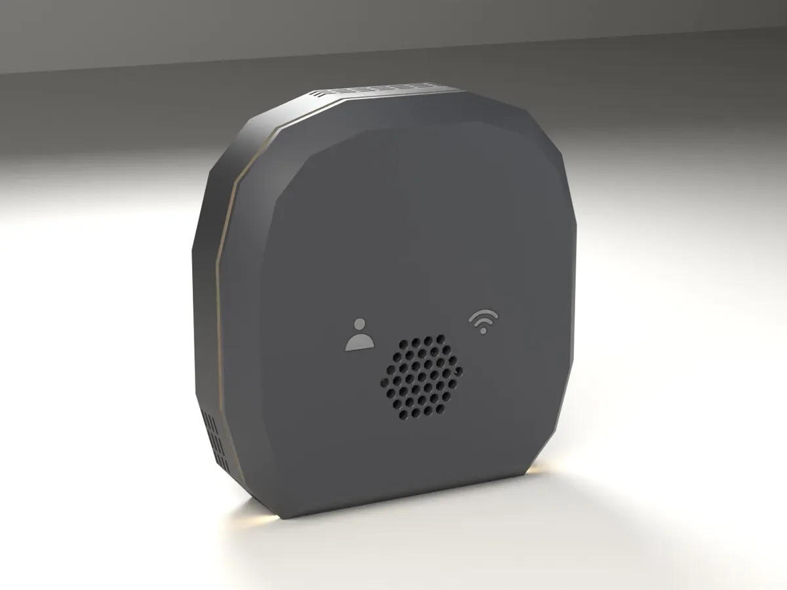
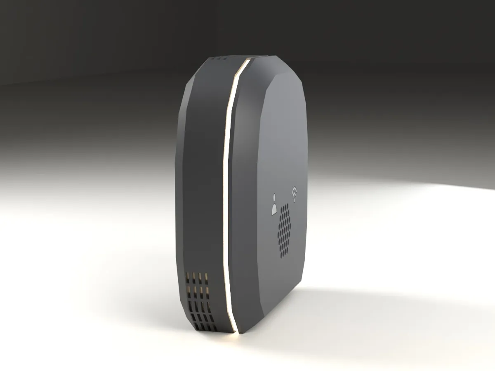
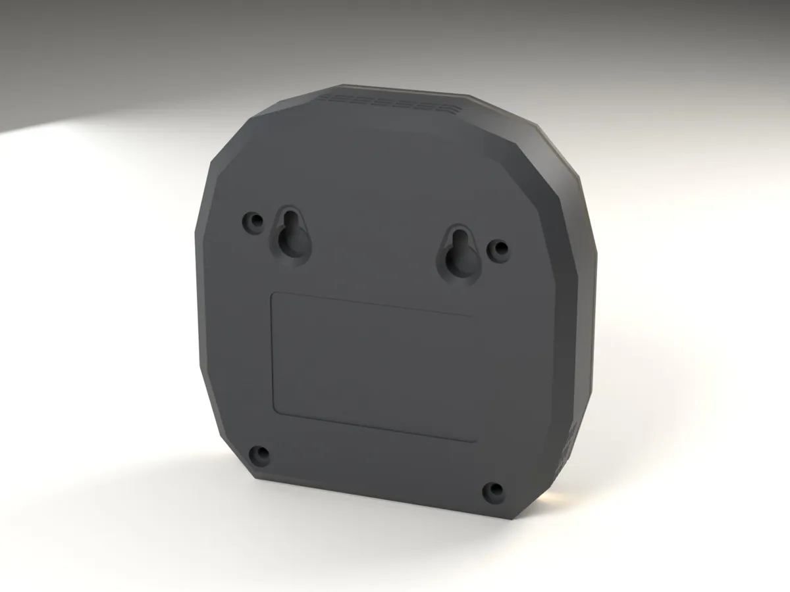
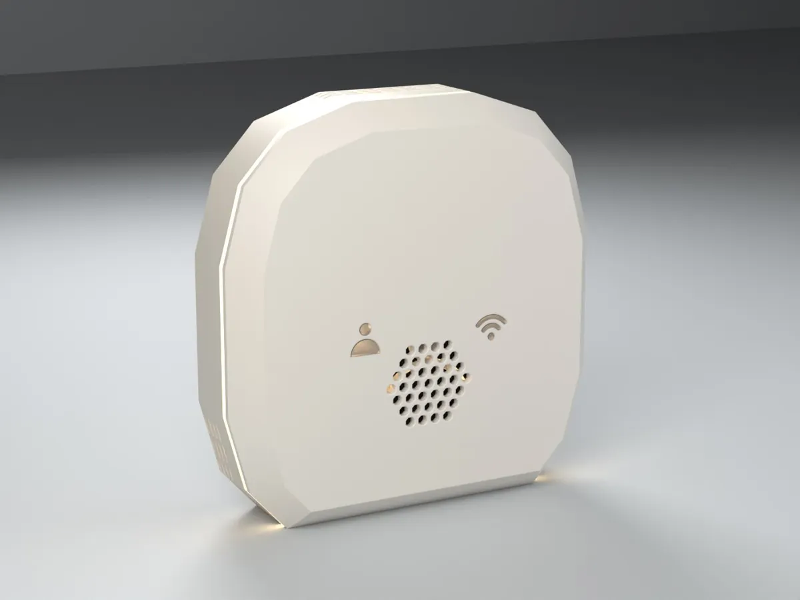
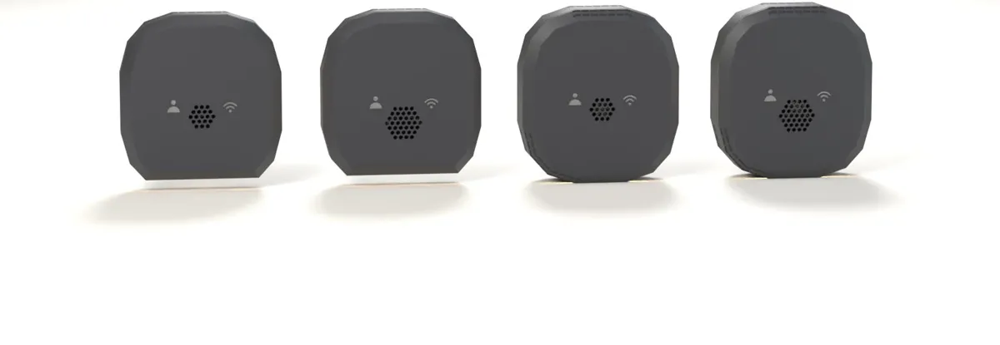
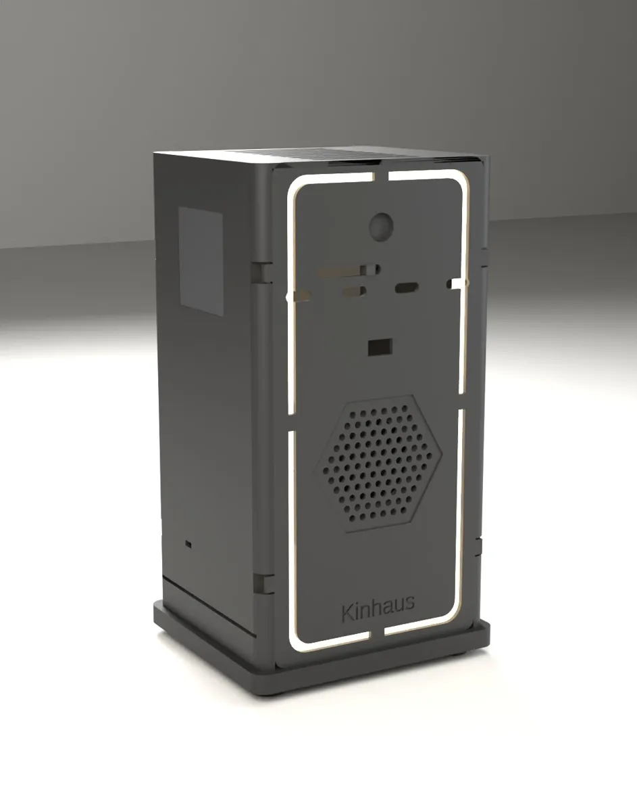

Local-first smart home · Works with Home Assistant
The home that senses you. And keeps it to itself.
Kinhaus builds premium room devices that know when you're there, read the air, light the way and answer when you speak. Every decision happens inside your walls. No cloud account, no subscription, and an internet outage can't switch your house off.
First production boards: November 2026 · Designed and tested in Chico, California

Why we exist
Your lights, your heat and your voice should answer to you. Not to a server you'll never see.
Works when the internet doesn't
Presence, automations and voice run on your own Home Assistant, so your house keeps its head when your provider loses theirs.
Private by design
No camera in a Node, no account, no data leaving the house. Radar senses that someone is there, never who they are or what they look like.
Yours to keep
No subscription that can be raised or switched off. Updates are signed, and they install only when you choose.
The stealth saucer
Designed to disappear into a room
Most smart-home gadgets look like gadgets. The Node is a low, faceted saucer that reads as part of the wall, until the halo wakes up.

Halo ring
A clear ring at the saucer's widest edge glows in any color: a status light, a gentle night light, a cue that the house heard you.
Faceted sixteen-sided face
Two bands of facets rise to a flat front plateau, so light catches the edges and the Node looks crafted, not molded.
Radar-true front
The plateau hides a radar window tuned to the radar's wavelength, so the shell never blinds the sensor behind it.
Two honest lights
A person symbol glows when someone is present. A Wi-Fi symbol tells you the Node's state at a glance.
Octagon grille, black cloth
The speaker and mic sit behind an octagon grille backed with acoustic cloth. You hear it; you don't see it.


Product 1
The Kinhaus Node
One device per room turns your house into a home that responds to who is actually there.
Real presence
Knows you're still in the room while you read or sleep, so lights never click off on you. It calibrates itself to each room.
Reads the air
A precision climate sensor in every room, so heating and fans follow the room you're in, not a hallway thermostat.
Light with meaning
Status, notifications and a soft night light from the same clear ring.
Rides through blips
A built-in rechargeable cell keeps the Node running through short power cuts.
Rooms that cooperate
Nodes talk to each other directly over a secure local mesh, so the right room responds.
Adopt in one click
Open firmware with its own Home Assistant integration. Each Node knows which room it lives in.
| Two models | Node | Node Voice |
|---|---|---|
| mmWave presence | Yes | Yes |
| Temperature and humidity | Yes | Yes |
| Halo light and status lights | Yes | Yes |
| Battery backup | Yes | Yes |
| Microphone | Sound level only | Voice, with local wake word |
| Speaker | No | Yes, Home Assistant Assist satellite |
| Power | USB-C | USB-C |
White
Connected and listening for the house.
Amber pulse
Offline. It tells you instead of failing quietly.
Red
Microphone muted. Nothing is heard.
Presence
The person symbol glows when someone is in the room.
Setup
On the wall in minutes
No app to download, no account to make. If you run Home Assistant, you already have everything you need.
Hang it
Two screws, a keyhole mount and a USB-C cable. No electrician, renter-friendly.
Adopt it
Home Assistant finds the Node on your network. Tell it which room it's in.
Live with it
Lights, climate and voice start following who is actually in each room.
The Kinhaus family
One idea, every room
Every Kinhaus device shares the same DNA: it senses, it knows its room, it cooperates with its neighbors, and it runs locally.

Node and Node Voice
The flagship room device, with or without voice. Firmware is released and runs every day in our test home.

In designKinhaus Hub
A quiet desk tower that becomes your home's brain: Home Assistant and a private AI assistant running on your own hardware, so even the smart answers never leave the house.
- NVIDIA Jetson-class AI computer for local language models
- Zigbee and Thread built in, 2.5 GbE networking
- Its own voice point: microphones, speaker and halo
- Camera with a physical sliding privacy shutter
Next generation
A flagship room device with a round touch screen, a far-field microphone array, air-quality sensing and smarter radar. Same saucer design language.
Panels and more
Wall panels and smaller sensors for halls and doors, shaped by what real homes in our pilot need.
Built to last
No device that bricks when a company changes its mind. Open firmware and local control are the foundation, not a feature.
Building in the open
Where we are
We'd rather show you real progress than promise a launch date.
- Oct 2026
Hardware designed
Production circuit boards and the Home Assistant integration finished.
- Nov 2026
The stealth saucer
The enclosure redesigned from scratch, printed and refined on the bench.
- Nov 2026
Living in a real home
Released firmware for every Node model. Three Nodes run the founder's home every day, with signed room-to-room messages and signed updates.
- Now
First production boards
The first Node Voice boards are coming off the factory line. Each one is flashed and self-tested on arrival.
- Next
Ten-unit pilot batch
A small validated batch, then a pilot in 5 to 15 real homes.
- After the pilot
Early access
Early access members hear first and get first pick of the first units.
From the founder
Built in my own home first
"I wanted a smart home that stays smart when the internet goes out, and doesn't ship my family's life to someone else's servers. Nobody made it, so I started building it. Every Kinhaus device lives on my own walls before it goes on yours."
Mason Wyman · Founder, Kinhaus · Chico, California
Early access
Be one of the first homes
Email us to join early access. You'll get build updates, a chance at the home pilot, and first pick when units are ready. No spam, ever.
hello@kinhaushome.com
Partners, press and investors: same address. A person reads every email.